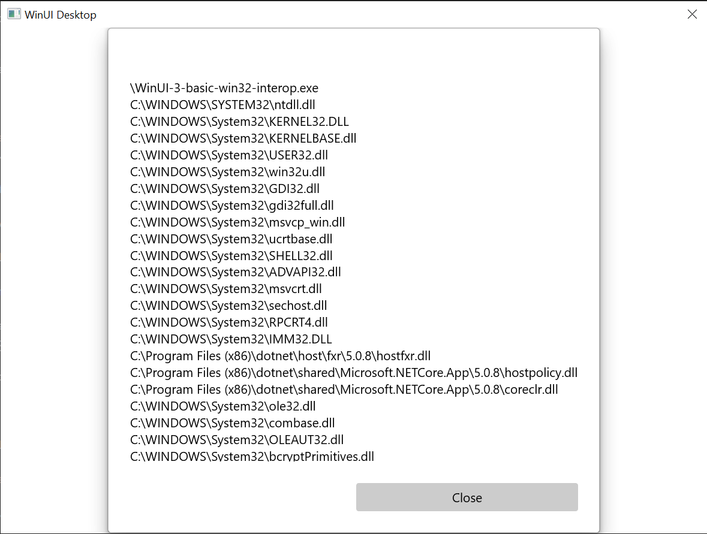
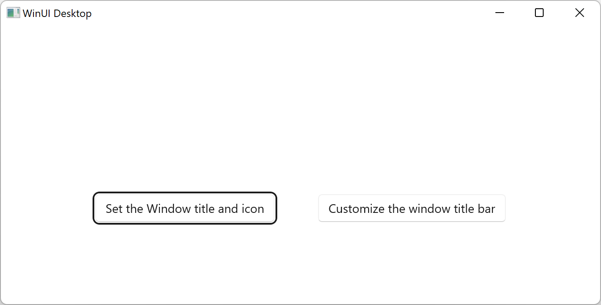
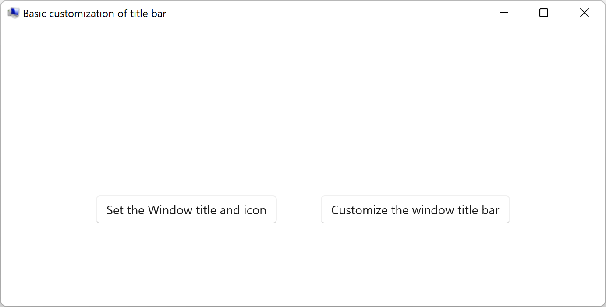
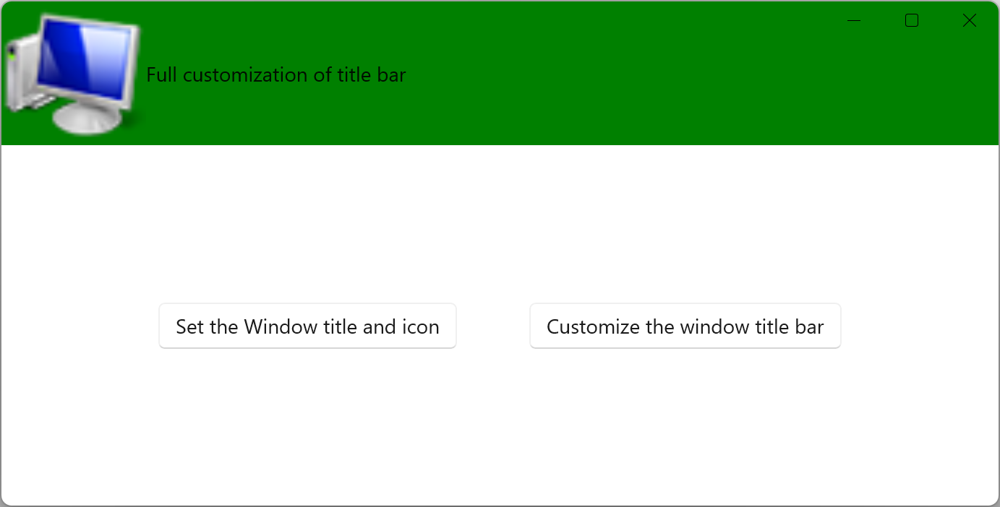

Build a C# .NET app with WinUI 3 and Win32 interop
In this topic, we step through how to build a basic C# .NET application with WinUI 3 and Win32 interop capabilities using Platform Invocation Services (PInvoke).
Prerequisites
Basic managed C#/.NET app
For this example, we'll specify the location and size of the app window, convert and scale it for the appropriate DPI, disable the window minimize and maximize buttons, and finally query the current process to show a list of the modules that are loaded into the current process.
We're going to build our example app from the initial template application (see Prerequisites). Also see WinUI 3 templates in Visual Studio.
The MainWindow.xaml file
With WinUI 3, you can create instances of the Window class in XAML markup.
The XAML Window class has been extended to support desktop windows, turning it into an abstraction of each of the low-level window implementations used by the UWP and desktop app models. Specifically, CoreWindow for UWP and window handles (or HWNDs) for Win32.
The following code shows the MainWindow.xaml file from the initial template app, which uses the Window class as the root element for the app.
<Window
x:Class="WinUI_3_basic_win32_interop.MainWindow"
xmlns="http://schemas.microsoft.com/winfx/2006/xaml/presentation"
xmlns:x="http://schemas.microsoft.com/winfx/2006/xaml"
xmlns:local="using:WinUI_3_basic_win32_interop"
xmlns:d="http://schemas.microsoft.com/expression/blend/2008"
xmlns:mc="http://schemas.openxmlformats.org/markup-compatibility/2006"
mc:Ignorable="d">
<StackPanel Orientation="Horizontal" HorizontalAlignment="Center" VerticalAlignment="Center">
<Button x:Name="myButton" Click="myButton_Click">Click Me</Button>
</StackPanel>
</Window>
Configuration
To call Win32 APIs exported from
User32.dll, you can use the C#/Win32 P/Invoke Source Generator in your Visual Studio project. Click Tools > NuGet Package Manager > Manage NuGet Packages for Solution..., and (on the Browse tab) search for Microsoft.Windows.CsWin32. For more details, see Calling Native Functions from Managed Code.You can optionally confirm that installation was successful by confirming that Microsoft.Windows.CsWin32 is listed under the Dependencies > Packages node in Solution Explorer.
You can also optionally double-click the application project file (or right click and select Edit project file) to open the file in a text editor, and confirm that the project file now includes a NuGet
PackageReferencefor "Microsoft.Windows.CsWin32".<Project Sdk="Microsoft.NET.Sdk"> <PropertyGroup> <OutputType>WinExe</OutputType> <TargetFramework>net8.0-windows10.0.19041.0</TargetFramework> <TargetPlatformMinVersion>10.0.17763.0</TargetPlatformMinVersion> <RootNamespace>WinUI_3_basic_win32_interop</RootNamespace> <ApplicationManifest>app.manifest</ApplicationManifest> <Platforms>x86;x64;ARM64</Platforms> <RuntimeIdentifiers>win-x86;win-x64;win-arm64</RuntimeIdentifiers> <PublishProfile>win-$(Platform).pubxml</PublishProfile> <UseWinUI>true</UseWinUI> <EnableMsixTooling>true</EnableMsixTooling> <Nullable>enable</Nullable> </PropertyGroup> <ItemGroup> <Content Include="Assets\SplashScreen.scale-200.png" /> <Content Include="Assets\LockScreenLogo.scale-200.png" /> <Content Include="Assets\Square150x150Logo.scale-200.png" /> <Content Include="Assets\Square44x44Logo.scale-200.png" /> <Content Include="Assets\Square44x44Logo.targetsize-24_altform-unplated.png" /> <Content Include="Assets\StoreLogo.png" /> <Content Include="Assets\Wide310x150Logo.scale-200.png" /> </ItemGroup> <ItemGroup> <Manifest Include="$(ApplicationManifest)" /> </ItemGroup> <!-- Defining the "Msix" ProjectCapability here allows the Single-project MSIX Packaging Tools extension to be activated for this project even if the Windows App SDK Nuget package has not yet been restored. --> <ItemGroup Condition="'$(DisableMsixProjectCapabilityAddedByProject)'!='true' and '$(EnableMsixTooling)'=='true'"> <ProjectCapability Include="Msix" /> </ItemGroup> <ItemGroup> <PackageReference Include="Microsoft.Windows.CsWin32" Version="0.3.183"> <PrivateAssets>all</PrivateAssets> <IncludeAssets>runtime; build; native; contentfiles; analyzers; buildtransitive</IncludeAssets> </PackageReference> <PackageReference Include="Microsoft.Windows.SDK.BuildTools" Version="10.0.26100.1742" /> <PackageReference Include="Microsoft.WindowsAppSDK" Version="1.6.250205002" /> </ItemGroup> <!-- Defining the "HasPackageAndPublishMenuAddedByProject" property here allows the Solution Explorer "Package and Publish" context menu entry to be enabled for this project even if the Windows App SDK Nuget package has not yet been restored. --> <PropertyGroup Condition="'$(DisableHasPackageAndPublishMenuAddedByProject)'!='true' and '$(EnableMsixTooling)'=='true'"> <HasPackageAndPublishMenu>true</HasPackageAndPublishMenu> </PropertyGroup> <!-- Publish Properties --> <PropertyGroup> <PublishReadyToRun Condition="'$(Configuration)' == 'Debug'">False</PublishReadyToRun> <PublishReadyToRun Condition="'$(Configuration)' != 'Debug'">True</PublishReadyToRun> <PublishTrimmed Condition="'$(Configuration)' == 'Debug'">False</PublishTrimmed> <PublishTrimmed Condition="'$(Configuration)' != 'Debug'">True</PublishTrimmed> </PropertyGroup> </Project>Add a text file to your project, and name it
NativeMethods.txt. The contents of this file inform the C#/Win32 P/Invoke Source Generator the functions and types for which you want P/Invoke source code generated. In other words, which functions and types you'll be calling and using in your C# code.GetDpiForWindow GetWindowLong SetWindowPos SetWindowLong HWND_TOP WINDOW_STYLE
Code
In the
App.xaml.cscode-behind file, we get a handle to the Window by using the WindowNative.GetWindowHandle WinRT COM interop method (see Retrieve a window handle (HWND)).That method is called from the app's OnLaunched handler, as shown here:
/// <summary> /// Invoked when the application is launched. /// </summary> /// <param name="args">Details about the launch request and process.</param> protected override void OnLaunched(Microsoft.UI.Xaml.LaunchActivatedEventArgs args) { m_window = new MainWindow(); var hwnd = WinRT.Interop.WindowNative.GetWindowHandle(m_window); SetWindowDetails(hwnd, 800, 600); m_window.Activate(); }We then call a
SetWindowDetailsmethod, passing the Window handle and preferred dimensions.In this method:
- We call GetDpiForWindow to get the dots per inch (dpi) value for the window (Win32 uses physical pixels, while WinUI 3 uses effective pixels). This dpi value is used to calculate the scale factor, and apply it to the width and height specified for the window.
- We then call SetWindowPos to specify the desired location of the window.
- Finally, we call SetWindowLong to disable the Minimize and Maximize buttons.
private static void SetWindowDetails(IntPtr hwnd, int width, int height) { var dpi = Windows.Win32.PInvoke.GetDpiForWindow((Windows.Win32.Foundation.HWND)hwnd); float scalingFactor = (float)dpi / 96; width = (int)(width * scalingFactor); height = (int)(height * scalingFactor); _ = Windows.Win32.PInvoke.SetWindowPos((Windows.Win32.Foundation.HWND)hwnd, Windows.Win32.Foundation.HWND.HWND_TOP, 0, 0, width, height, Windows.Win32.UI.WindowsAndMessaging.SET_WINDOW_POS_FLAGS.SWP_NOMOVE); var nIndex = Windows.Win32.PInvoke.GetWindowLong((Windows.Win32.Foundation.HWND)hwnd, Windows.Win32.UI.WindowsAndMessaging.WINDOW_LONG_PTR_INDEX.GWL_STYLE) & ~(int)Windows.Win32.UI.WindowsAndMessaging.WINDOW_STYLE.WS_MINIMIZEBOX & ~(int)Windows.Win32.UI.WindowsAndMessaging.WINDOW_STYLE.WS_MAXIMIZEBOX; _ = Windows.Win32.PInvoke.SetWindowLong((Windows.Win32.Foundation.HWND)hwnd, Windows.Win32.UI.WindowsAndMessaging.WINDOW_LONG_PTR_INDEX.GWL_STYLE, nIndex); }In the MainWindow.xaml file, we use a ContentDialog with a ScrollViewer to display a list of all the modules loaded for the current process.
<StackPanel Orientation="Horizontal" HorizontalAlignment="Center" VerticalAlignment="Center"> <Button x:Name="myButton" Click="myButton_Click">Display loaded modules</Button> <ContentDialog x:Name="contentDialog" CloseButtonText="Close"> <ScrollViewer> <TextBlock x:Name="cdTextBlock" TextWrapping="Wrap" /> </ScrollViewer> </ContentDialog> </StackPanel>We then replace the
MyButton_Clickevent handler with the following code.Here, we get a reference to the current process by calling GetCurrentProcess. We then iterate through the collection of Modules and append the filename of each ProcessModule to our display string.
private async void myButton_Click(object sender, RoutedEventArgs e) { myButton.Content = "Clicked"; var description = new System.Text.StringBuilder(); var process = System.Diagnostics.Process.GetCurrentProcess(); foreach (System.Diagnostics.ProcessModule module in process.Modules) { description.AppendLine(module.FileName); } cdTextBlock.Text = description.ToString(); await contentDialog.ShowAsync(); }Compile and run the app.
After the window appears, select the "Display loaded modules" button.

The basic Win32 interop application described in this topic.
Summary
In this topic we covered accessing the underlying window implementation (in this case Win32 and HWNDs) and using Win32 APIs along with the WinRT APIs. This demonstrates how you can use existing desktop application code when creating new WinUI 3 desktop apps.
For a more extensive sample, see the AppWindow gallery sample in the Windows App SDK Samples GitHub repo.
An example to customize the window title bar
In this second example, we show how to customize the window's title bar and its content. Before following along with it, review these topics:
Create a new project
- In Visual Studio, create a new C# or C++/WinRT project from the Blank App, Packaged (WinUI 3 in Desktop) project template.
Configuration
Again, reference the Microsoft.Windows.CsWin32 NuGet package just like we did in the first example.
Add a
NativeMethods.txttext file to your project.LoadImage SendMessage SetWindowText WM_SETICON
MainWindow.xaml
Note
If you need an icon file to use with this walkthrough, then you can download the computer.ico file from the WirelessHostednetwork sample app. Place that file in your Assets folder, and add the file to your project as content. You'll then be able to refer to the file using the url Assets/computer.ico.
Otherwise, feel free to use an icon file that you already have, and change the two references to it in the code listings below.
- In the code listing below, you'll see that in
MainWindow.xamlwe've added two buttons, and specified Click handlers for each. In the Click handler for the first button (basicButton_Click), we set the title bar icon and text. In the second (customButton_Click), we demonstrate more significant customization by replacing the title bar with the content of the StackPanel named customTitleBarPanel.
<?xml version="1.0" encoding="utf-8"?>
<Window
x:Class="window_titlebar.MainWindow"
xmlns="http://schemas.microsoft.com/winfx/2006/xaml/presentation"
xmlns:x="http://schemas.microsoft.com/winfx/2006/xaml"
xmlns:local="using:window_titlebar"
xmlns:d="http://schemas.microsoft.com/expression/blend/2008"
xmlns:mc="http://schemas.openxmlformats.org/markup-compatibility/2006"
mc:Ignorable="d"
Title="Basic WinUI 3 Window title bar sample">
<Grid x:Name="rootElement" RowDefinitions="100, *, 100, *">
<StackPanel x:Name="customTitleBarPanel" Grid.Row="0" Orientation="Horizontal" HorizontalAlignment="Stretch" VerticalAlignment="Top" Visibility="Collapsed">
<Image Source="Images/windowIcon.gif" />
<TextBlock VerticalAlignment="Center" Text="Full customization of title bar"/>
</StackPanel>
<StackPanel x:Name="buttonPanel" Grid.Row="2" Orientation="Horizontal" HorizontalAlignment="Center">
<Button x:Name="basicButton" Click="basicButton_Click" Margin="25">Set the Window title and icon</Button>
<Button x:Name="customButton" Click="customButton_Click" Margin="25">Customize the window title bar</Button>
</StackPanel>
</Grid>
</Window>
MainWindow.xaml.cs/cpp
- In the code listing below for the basicButton_Click handler—in order to keep the custom title bar hidden—we collapse the customTitleBarPanel StackPanel, and we set the ExtendsContentIntoTitleBar property to
false. - We then call IWindowNative::get_WindowHandle (for C#, using the interop helper method GetWindowHandle) to retrieve the window handle (HWND) of the main window.
- Next, we set the application icon (for C#, using the PInvoke.User32 NuGet package) by calling the LoadImage and SendMessage functions.
- Finally, we call SetWindowText to update the title bar string.
private void basicButton_Click(object sender, RoutedEventArgs e)
{
// Ensure the custom title bar content is not displayed.
customTitleBarPanel.Visibility = Visibility.Collapsed;
// Disable custom title bar content.
ExtendsContentIntoTitleBar = false;
//Get the Window's HWND
var hwnd = WinRT.Interop.WindowNative.GetWindowHandle(this);
var hIcon = Windows.Win32.PInvoke.LoadImage(
null,
"Images/windowIcon.ico",
Windows.Win32.UI.WindowsAndMessaging.GDI_IMAGE_TYPE.IMAGE_ICON,
20, 20,
Windows.Win32.UI.WindowsAndMessaging.IMAGE_FLAGS.LR_LOADFROMFILE);
Windows.Win32.PInvoke.SendMessage(
(Windows.Win32.Foundation.HWND)hwnd,
Windows.Win32.PInvoke.WM_SETICON,
(Windows.Win32.Foundation.WPARAM)0,
(Windows.Win32.Foundation.LPARAM)hIcon.DangerousGetHandle());
Windows.Win32.PInvoke.SetWindowText((Windows.Win32.Foundation.HWND)hwnd, "Basic customization of title bar");
}
// pch.h
...
#include <microsoft.ui.xaml.window.h>
...
// MainWindow.xaml.h
...
void basicButton_Click(Windows::Foundation::IInspectable const& sender, Microsoft::UI::Xaml::RoutedEventArgs const& args);
...
// MainWindow.xaml.cpp
void MainWindow::basicButton_Click(IInspectable const&, RoutedEventArgs const&)
{
// Ensure the that custom title bar content is not displayed.
customTitleBarPanel().Visibility(Visibility::Collapsed);
// Disable custom title bar content.
ExtendsContentIntoTitleBar(false);
// Get the window's HWND
auto windowNative{ this->m_inner.as<::IWindowNative>() };
HWND hWnd{ 0 };
windowNative->get_WindowHandle(&hWnd);
HICON icon{ reinterpret_cast<HICON>(::LoadImage(nullptr, L"Assets/computer.ico", IMAGE_ICON, 0, 0, LR_DEFAULTSIZE | LR_LOADFROMFILE)) };
::SendMessage(hWnd, WM_SETICON, 0, (LPARAM)icon);
this->Title(L"Basic customization of title bar");
}
- In the customButton_Click handler, we set the visibility of the customTitleBarPanel StackPanel to Visible.
- We then set the ExtendsContentIntoTitleBar property to
true, and call SetTitleBar to display the customTitleBarPanel StackPanel as our custom title bar.
private void customButton_Click(object sender, RoutedEventArgs e)
{
customTitleBarPanel.Visibility = Visibility.Visible;
// Enable custom title bar content.
ExtendsContentIntoTitleBar = true;
// Set the content of the custom title bar.
SetTitleBar(customTitleBarPanel);
}
// MainWindow.xaml.h
...
void customButton_Click(Windows::Foundation::IInspectable const& sender, Microsoft::UI::Xaml::RoutedEventArgs const& args);
...
// MainWindow.xaml.cpp
void MainWindow::customButton_Click(IInspectable const&, RoutedEventArgs const&)
{
customTitleBarPanel().Visibility(Visibility::Visible);
// Enable custom title bar content.
ExtendsContentIntoTitleBar(true);
// Set the content of the custom title bar.
SetTitleBar(customTitleBarPanel());
}
App.xaml
- In the
App.xamlfile, immediately after the<!-- Other app resources here -->comment, we've added some custom-colored brushes for the title bar, as shown below.
<?xml version="1.0" encoding="utf-8"?>
<Application
x:Class="window_titlebar.App"
xmlns="http://schemas.microsoft.com/winfx/2006/xaml/presentation"
xmlns:x="http://schemas.microsoft.com/winfx/2006/xaml"
xmlns:local="using:window_titlebar">
<Application.Resources>
<ResourceDictionary>
<ResourceDictionary.MergedDictionaries>
<XamlControlsResources xmlns="using:Microsoft.UI.Xaml.Controls" />
<!-- Other merged dictionaries here -->
</ResourceDictionary.MergedDictionaries>
<!-- Other app resources here -->
<SolidColorBrush x:Key="WindowCaptionBackground">Green</SolidColorBrush>
<SolidColorBrush x:Key="WindowCaptionBackgroundDisabled">LightGreen</SolidColorBrush>
<SolidColorBrush x:Key="WindowCaptionForeground">Red</SolidColorBrush>
<SolidColorBrush x:Key="WindowCaptionForegroundDisabled">Pink</SolidColorBrush>
</ResourceDictionary>
</Application.Resources>
</Application>
If you've been following along with these steps in your own app, then you can build your project now, and run the app. You'll see an application window similar to the following (with the custom app icon):

Template app.
Here's the basic custom title bar:

Template app with custom application icon.Here's the fully custom title bar:

Template app with custom title bar.